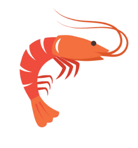
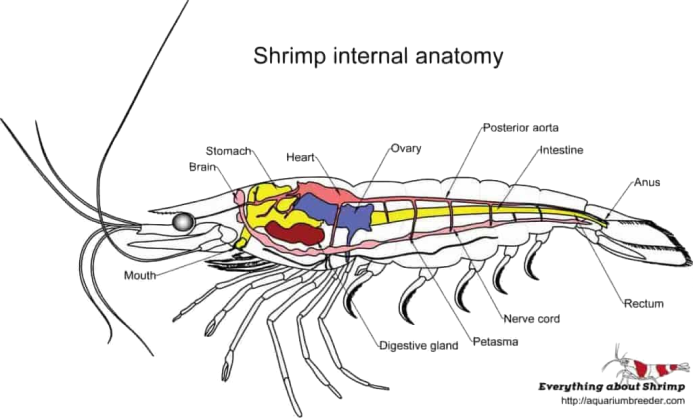

Shrimps
Everything You Would Want To Know About Shrimps
Description

The following description refers mainly to the external anatomy of the common European shrimp, Crangon
crangon, as a typical example of a decapod shrimp. The body of the shrimp is divided into two main parts:
the head and thorax which are fused together to form the cephalothorax, and a long narrow abdomen.
The shell which protects the cephalothorax is harder and thicker than the shell elsewhere on the shrimp and
is called
the carapace. The carapace typically surrounds the gills, through which water is pumped by the action of the
mouthparts. The rostrum, eyes, whiskers and legs also issue from the carapace. The rostrum, from the
Latin rōstrum meaning beak, looks like a beak or pointed nose at the front of the shrimp's head. It is a
rigid forward extension of the carapace and can be used for attack or defense. It may also stabilize the
shrimp when it swims backward.
Two bulbous eyes on stalks sit either side of the rostrum. These are compound
eyes which have panoramic vision and are very good at detecting movement. Two pairs of whiskers (antennae)
also issue from the head. One of these pairs is very long and can be twice the length of the shrimp, while
the other pair is quite short. The antennae have sensors on them which allow the shrimp to feel where they
touch, and also allow them to "smell" or "taste" things by sampling the chemicals in the water. The long
antennae help the shrimp orient itself with regard to its immediate surroundings, while the short antennae
help assess the suitability of prey
Habitat

Shrimp are widespread, and can be found near the seafloor of most coasts and estuaries, as well as in rivers
and lakes. There are numerous species, and usually there is a species adapted to any particular habitat.
Most shrimp species are marine, although about a quarter of the described species are found in fresh
water. Marine species are found at depths of up to 5,000 metres (16,000 ft), and from the tropics to
the polar regions. Although shrimp are almost entirely fully aquatic, the two species of Merguia are
semi-terrestrial and spend a significant part of their life on land in mangrove.
Most shrimp are omnivorous, but some are specialised for particular modes of feeding. Some are filter
feeders, using their setose (bristly) legs as a sieve; some scrape algae from rocks. Cleaner shrimp feed on
the parasites and necrotic tissue of the reef fish they groom. Some species of shrimp are known to
cannibalize others as well if other food sources are not readily available. In turn, shrimp are eaten by
various animals, particularly fish and seabirds, and frequently host bopyrid parasites.
Behavior

There are many variations in the ways different types of shrimp look and behave. Even within the core group
of caridean shrimp, the small delicate Pederson's shrimp looks and behaves quite unlike the large
commercial pink shrimp or the snapping pistol shrimp.
The caridean family of pistol shrimp are
characterized by big asymmetrical claws, the larger of which can produce a loud snapping sound. The family
is diverse and worldwide in distribution, consisting of about 600 species. Colonies of snapping shrimp
are a major source of noise in the ocean and can interfere with sonar and underwater
communication. The small emperor shrimp has a symbiotic relationship with sea slugs and sea
cucumbers, and may help keep them clear of ectoparasites
Females of the freshwater shrimp Caridina ensifera are capable of storing sperm from multiple partners, and
thus can produce progeny with different paternities. Reproductive success of sires was found to
correlate inversely with their genetic relatedness to the mother.[ This finding suggests that sperm
competition and/or pre- and post-copulatory female choice occurs. Female choice may increase the fitness of
progeny by reducing inbreeding depression that ordinarily results from the expression of homozygous
deleterious recessive mutations.[
Species
There is little agreement among taxonomists concerning the phylogeny of crustaceans. Within the decapods
"every study gives totally different results. Nor do even one of these studies match any of the rival
morphology studies". Some taxonomists identify shrimp with the infraorder Caridea and prawns with the
suborder Dendrobranchiata. While different experts give different answers, there is no disagreement that
the caridean species are shrimp. There are over 3000 caridean species. Occasionally they are referred
to as "true shrimp".
Traditionally decapods were divided into two suborders: the Natantia (or swimmers), and the Reptantia (or
walkers). The Natantia or swimmers included the shrimp. They were defined by their abdomen which, together
with its appendages was well adapted for swimming. The Reptantia or walkers included the crabs and lobsters.
These species have small abdominal appendages, but robust legs well adapted for walking. The Natantia was
thought to be paraphyletic, that is, it was thought that originally all decapods were like shrimp.
However, classifications are now based on clades, and the paraphyletic suborder Natantia has been
discontinued. "On this basis, taxonomic classifications now divide the order Decapoda into the two
suborders: Dendrobranchiata for the largest shrimp clade, and Pleocyemata for all other decapods. The
Pleocyemata are in turn divided into half a dozen infra-orders"[